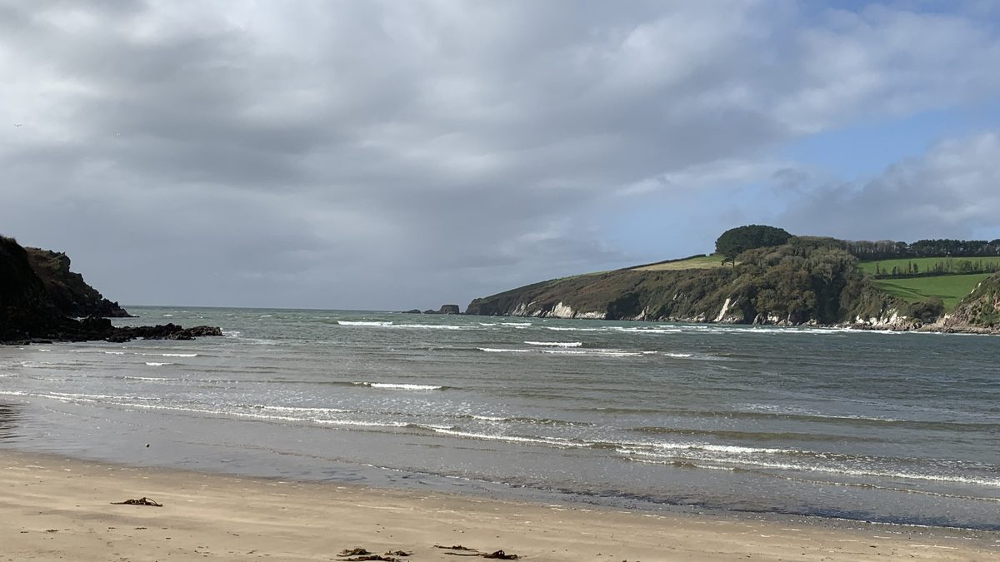
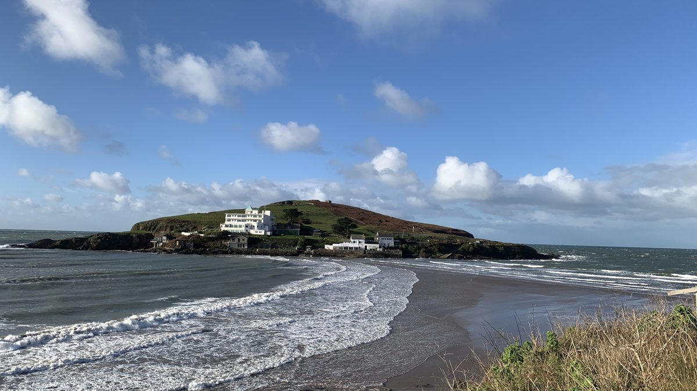
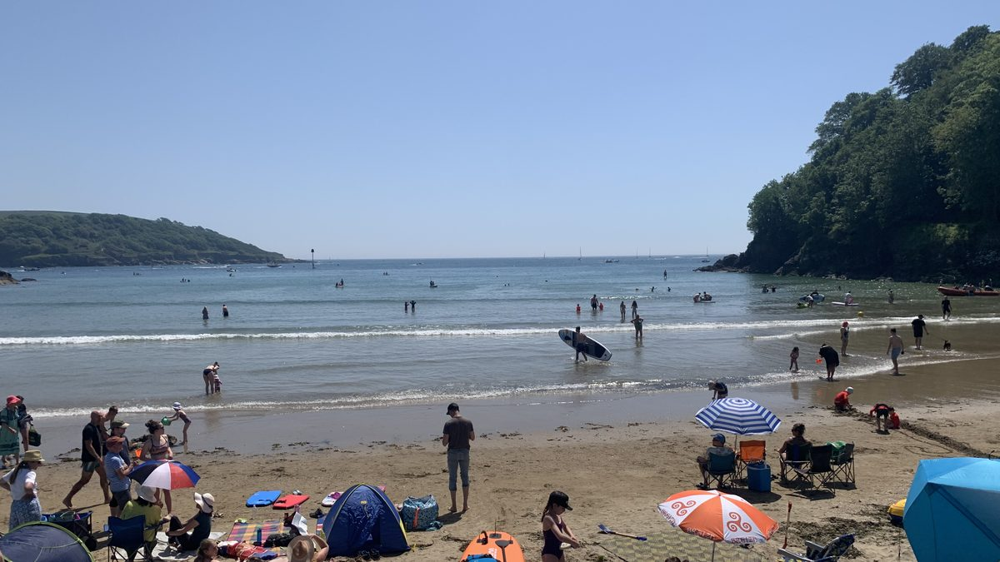
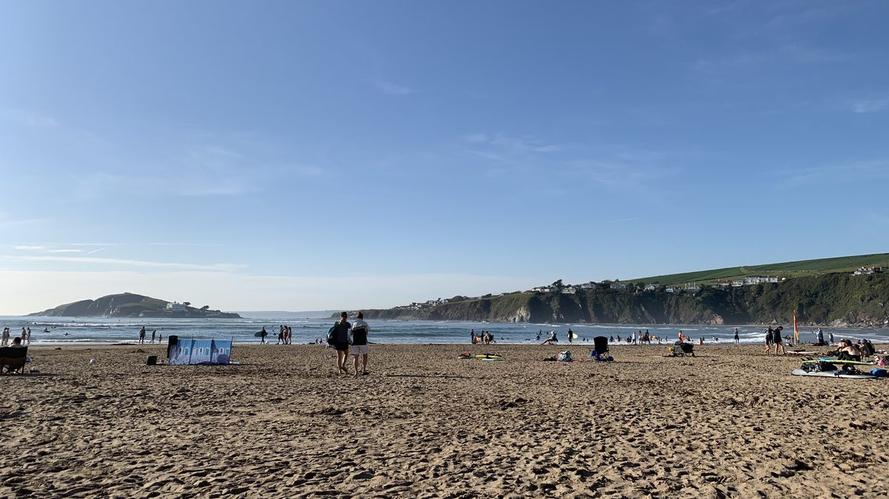

South Devon · On the doorstep
From wild estuary sands to surf beaches and sheltered swimming coves — some of South Devon's finest beaches are within easy reach of Kingston.

Estuary beach · Dog friendly all year
Wonwell is one of those beaches that feels like a genuine discovery. Tucked at the mouth of the Erme estuary, it reveals a wide expanse of wild, unspoilt sand at low tide — rarely busy even in peak season. The walk from Kingston is part of the pleasure: either along the estuary shore at low tide, or along the footpath through the fields. Good for swimming when the tide is right, and completely peaceful whatever the season.
Insider tip: At low tide it is possible to wade across the Erme to Mothecombe Beach on the far bank — and from there it's a short walk to the Schoolhouse restaurant. Check tide times carefully before crossing so you can be sure of getting back. The BBC Tide Tables are reliable and free.

Sandy beach · Surf & swimming
Bigbury-on-Sea is the area's most complete beach day destination — a wide, sandy beach with everything you need, and iconic Burgh Island sitting just offshore. Whether you're after surfing lessons, a coffee on the sand, a proper lunch, or simply a long swim with the Art Deco hotel as a backdrop, Bigbury delivers. Cross to Burgh Island on foot at low tide, or by the famous sea tractor at high tide.
Insider tip: The field car park at the start of the village is considerably cheaper than the beach car park and is only a short walk to the sand. Worth the extra few minutes. And if you're planning to cross to Burgh Island, check the sea tractor times at the slipway before heading onto the beach — it runs at high tide only.

Sheltered estuary beach · Swimming & watersports
North Sands is Salcombe's most accessible and most loved beach — a sheltered sandy cove on the estuary, protected from Atlantic swell and perfect for swimming and paddleboarding. It gets busy on summer days, and rightly so. But the real appeal is what surrounds it: the Winking Prawn next door for one of the best seaside lunches in Devon, and a beautiful coastal path to South Sands from where a ferry takes you straight into Salcombe town for the afternoon.
Insider tip: Do the North Sands to South Sands walk before lunch rather than after — it works up an appetite nicely and means you arrive at the Winking Prawn just as the lunch rush is easing. Book a table in advance in summer.

Surf beach · RNLI patrolled
Bantham is one of the finest beaches in South Devon — a wide, open stretch of golden sand at the mouth of the Avon estuary, with consistent surf, RNLI lifeguard patrols and some of the best beach food in the area. Walk over the dunes from the car park and the beach opens up in front of you. Popular with surfers and families alike, and with Burgh Island just visible on the horizon to the west. The single track lane down to the car park can be busy in summer — allow extra time and be patient.
Insider tip: The Bantham Vineyard wine at the beach food site is a genuinely lovely touch — a glass of English wine on the sand with surf and Burgh Island in front of you is hard to beat. And if you're driving down in July or August, go early or late in the day to avoid the single track lane at its busiest.
The Garden House is perfectly placed for all of these beaches — a one bedroom cottage for two in Kingston village.
Walking guides Explore the area